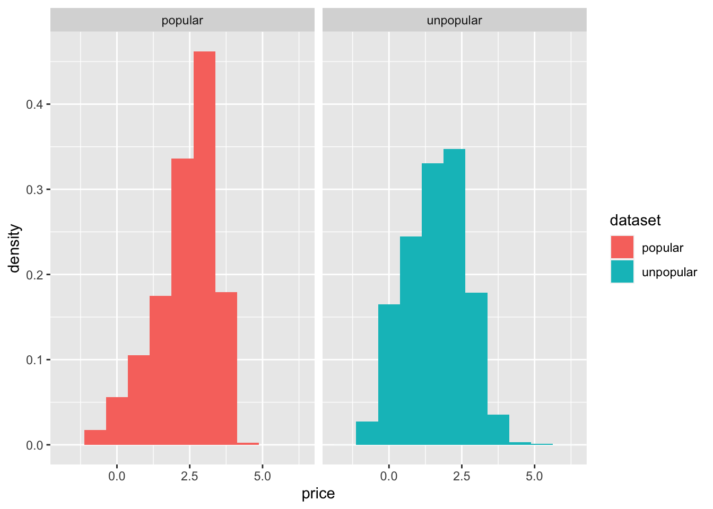
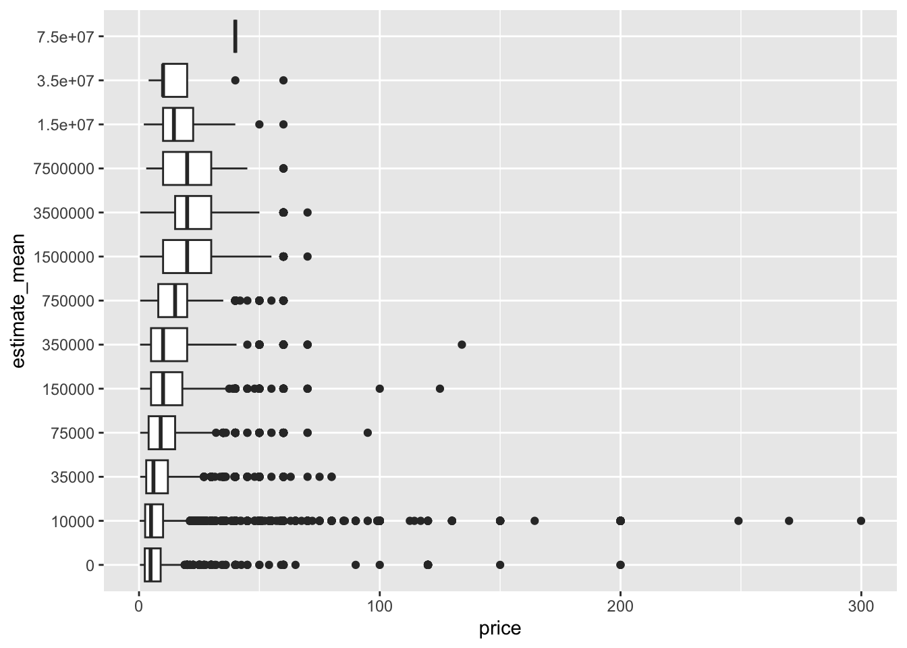
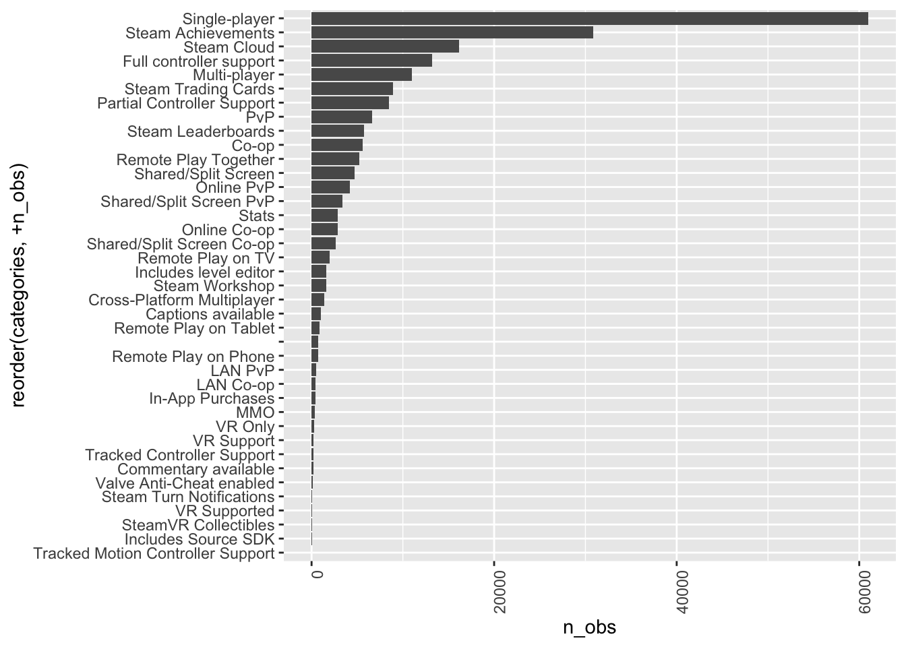
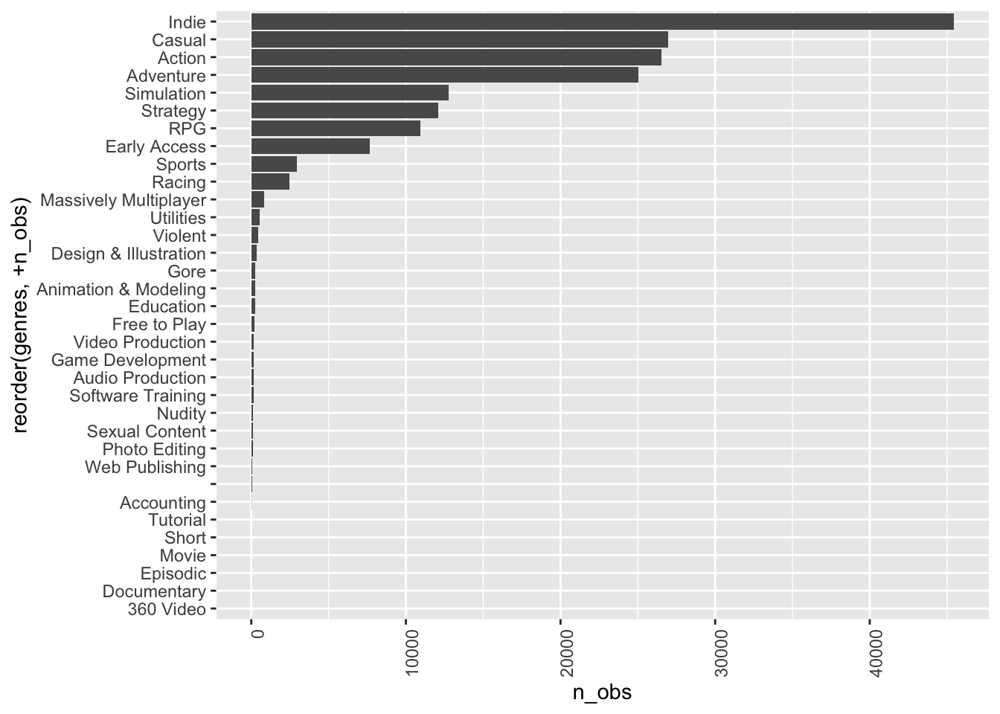
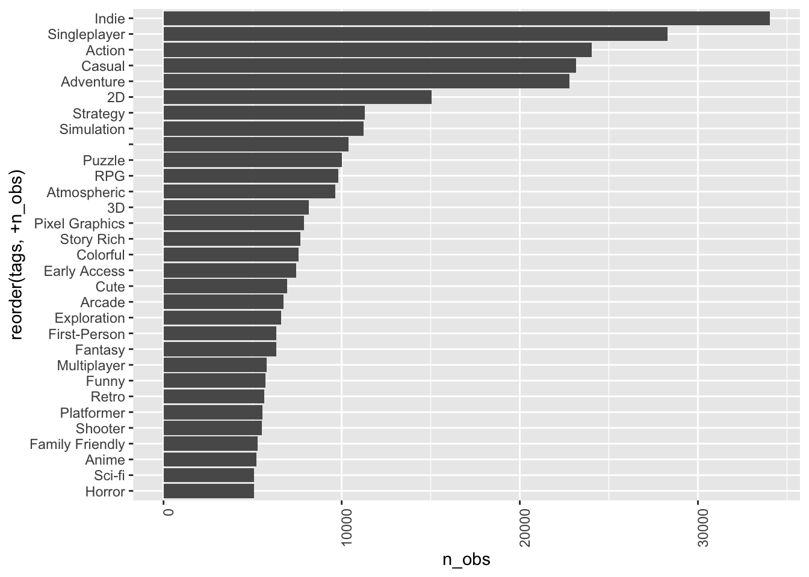
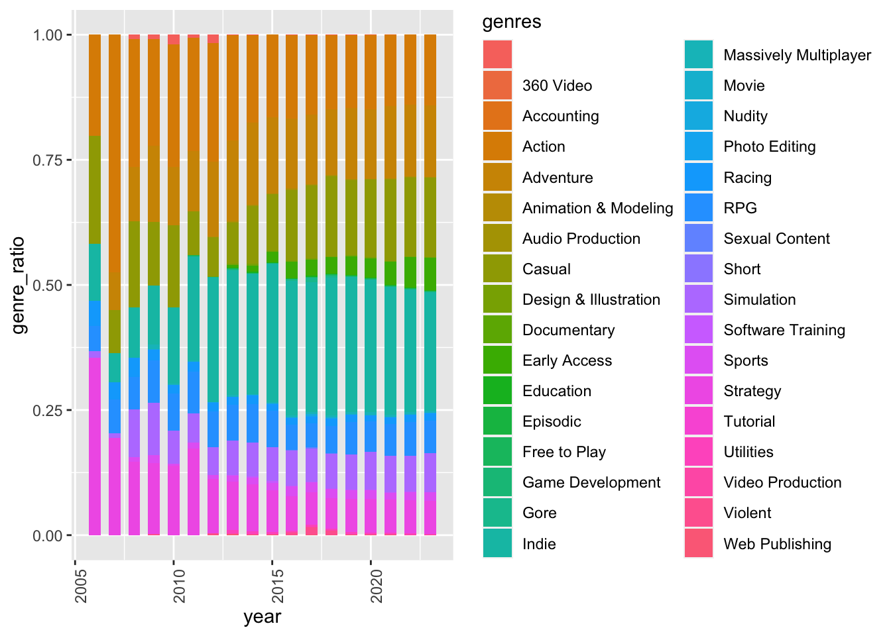

In the process of preparing our data for analysis, we have established a set of inclusion and variable selection criteria to ensure the relevance of our study. These criteria are vital to the successful execution of our data science investigation.
One of the primary inclusion criteria for our analysis is the exclusion of free games from our dataset. This decision is underpinned by the understanding that in free-to-play games, in-app purchases often serve as viable alternatives to traditional game sales. However, due to the unavailability of comprehensive data pertaining to these in-app purchases, their inclusion in our analysis would be both impractical and imprecise.
In addition, we have also opted to remove certain variables from our dataset that are non-essential for our analysis.
We eliminate columns containing URLs as they do not contribute meaningful information to our analytical objectives.
Variables associated with game developers and publishers will be filtered out for two primary reasons. Firstly, we posit that making predictions or quantify the effect of developer names may be challenging, if not unfeasible. Secondly, we hypothesize that brand effects can be more accurately captured through a combination of game features and keywords, for example, there is a tag for independent games, which is the complement of games made by large companies.
Furthermore, we will exclude the variables “Playtime in Current Two Weeks” as it may not be representative for older games, and “Average Playtime Forever” in favor of “Median Playtime Forever” due to potential distortions caused by AFK (Away From Keyboard) gamers.
It is worth noting that we are cognizant of the need to address potential data leakage issues and redundant feature when fitting our model. These aspects will be thoroughly addressed in subsequent stages of our analysis to ensure the robustness of our findings.
df = read.csv("DATA/games.csv")|>
janitor::clean_names()|>
subset(select = -c(dlc_count, about_the_game, reviews, header_image, website, support_url, support_email, metacritic_score, metacritic_url, notes, developers, publishers, screenshots, movies, score_rank, average_playtime_two_weeks, median_playtime_two_weeks, average_playtime_forever, peak_ccu, full_audio_languages))|>
subset(price > 0)
#Change the format of release date.
df = df|>
mutate(release_date = as.Date(release_date, format = "%b %d, %Y"))In our project, the exploration of key features of popular games forms a central objective. To establish a precise definition of “popular games” in the context of our analysis, we will primarily adhere to the standard set by Steam, a prominent gaming platform [https://www.reddit.com/r/Steam/comments/ivz45n/what_does_the_steam_ratings_like_very_negative_or/] According to Steam’s rating system, we will categorize games as “popular” if they fall into the following rating categories: mostly positive, positive, very positive, overwhelmingly positive. This approach ensures that we consider user sentiment as a crucial aspect of popularity.
However, we recognize that popularity encompasses more than just ratings; it also pertains to the volume of users who purchase and engage with a game. To account for this broader perspective of popularity, we have incorporated the following criteria:
Estimated Owners: We will exclude games with an estimated owner count in the range of 0-0 and 0-20,000. This criteria ensures that we focus on games with a substantial user base.
Median Playtime: Games selected for analysis will have a median playtime exceeding 120 minutes. This threshold corresponds to the latest time frame within which Steam allows game refunds. This criterion further refines our definition of popular games by considering active engagement and retention, which are indicative of a game’s enduring appeal.
By combining these rating, ownership, and playtime criteria, we aim to create a comprehensive definition of “popular games” that accounts for both user sentiment and the size of the player base, enabling us to explore key features that contribute to a game’s popularity in a holistic manner.
df_popular = df|>
subset((positive+negative) > 10)|>
subset(positive/(positive+negative) > 0.7)|>
subset(estimated_owners != "0 - 20000")|>
subset(estimated_owners != "0 - 0")|>
subset(median_playtime_forever > 120)
df_unpopular = anti_join(df, df_popular, by="app_id")summary(pull(df_popular, price))## Min. 1st Qu. Median Mean 3rd Qu. Max.
## 0.49 5.99 12.99 15.24 19.99 99.99summary(pull(df_unpopular, price))## Min. 1st Qu. Median Mean 3rd Qu. Max.
## 0.290 2.690 4.990 8.164 9.990 999.000Based on tables, it is evident that popular games consistently exhibit higher prices when compared to their less popular counterparts across all quadrants. This trend can be logically attributed to several key factors that play a pivotal role in shaping the pricing dynamics within the gaming industry. Game
Mechanics: Popular games often incorporate complex and engaging game mechanics that elevate the overall gaming experience. The development and refinement of such intricate mechanics requires investment in terms of design, testing, and optimization, all of which contribute to higher production costs and reflect on the final price.
Animation Effects: The visually captivating animation effects is a hallmark of popular games. These effects enhance immersion and player engagement, but their creation requires the expertise of skilled artists and animators, thereby increasing development expenses.
Game Optimization: Popular games prioritize performance optimization to ensure smooth gameplay across a wide range of hardware configurations(although some popular games still have tons of bugs). Achieving such optimization demands rigorous coding and testing efforts, which in turn incur additional costs.
Also, we used statistical test to test whether there is difference in the two price distribution.
df_unpopular = df_unpopular|>subset(name != "Ascent Free-Roaming VR Experience")
combined_data = rbind(data.frame(dataset = "unpopular", price = log(df_unpopular$price)),
data.frame(dataset = "popular", price = log(df_popular$price)))
ggplot(data = combined_data, aes(x = price, fill = dataset)) +
geom_histogram(aes(y = ..density..), binwidth = 0.75)+
facet_grid(~dataset)
The two distribution loos approximately normal, so we decide to use T-test to test whether two groups’s log transformed price have similar distribution.
H0: they have same mean price H1: they have different mean price
result <- t.test(log(df_popular$price), log(df_unpopular$price))
result##
## Welch Two Sample t-test
##
## data: log(df_popular$price) and log(df_unpopular$price)
## t = 52.203, df = 6600.4, p-value < 2.2e-16
## alternative hypothesis: true difference in means is not equal to 0
## 95 percent confidence interval:
## 0.7035047 0.7584022
## sample estimates:
## mean of x mean of y
## 2.346463 1.615510The result shows a p-value smaller than 0.05, so we reject the null and conclude that the two groups have different mean price.
# we filter out Ascent Free-Roaming VR Experience since its price is 1000 dollars, which will make it hard to see any trend from our plot.
df|>
subset(name != "Ascent Free-Roaming VR Experience")|>
separate_wider_delim(cols = estimated_owners, delim = " - ", names = c("estimate_low", "estimate_high"))|>
mutate(estimate_low = as.numeric(estimate_low))|>
mutate(estimate_high = as.numeric(estimate_high))|>
mutate(estimate_mean = (estimate_high + estimate_low)/2)|>
mutate(estimate_mean = factor(estimate_mean))|>
ggplot(aes(x = estimate_mean, y = price))+
geom_boxplot()+
coord_flip()
From the price distribution plot of games categorized by different estimated owner counts, a notable pattern emerges. Specifically, games with a greater number of estimated owners tend to exhibit relatively higher prices. However, an intriguing observation is that once a certain threshold of estimated owners is reached, the prices of games begin to decline. ### Overall frequency of keywords(genre, categories, tags)
Here, we try to explore the trend of keywords in genre, categories, tags.
categories_freq = df|>
separate_rows(categories, sep = ",")|>
group_by(categories)|>
summarise(n_obs = n())|>
arrange(desc(n_obs))|>
ggplot(aes(x = reorder(categories, +n_obs), y = n_obs))+
geom_bar(stat="identity")+
theme(axis.text.x = element_text(angle = 90, vjust = 1, hjust=1)) +
coord_flip()
categories_freq
From the bar plot, it is evident that single-player games have highest frequency in our dataset, this is reasonable since multi-player games require higher optimization, single player games is the best choice for independent game maker. The VR related categories have low frequency in games, this is because the equipment is expensive and the technology is relatively new.
genre_freq = df|>
separate_rows(genres, sep = ",")|>
group_by(genres)|>
summarise(n_obs = n())|>
arrange(desc(n_obs))|>
ggplot(aes(x = reorder(genres, +n_obs), y = n_obs))+
geom_bar(stat="identity")+
theme(axis.text.x = element_text(angle = 90, vjust = 1, hjust=1)) +
coord_flip()
genre_freq
For the bar plot of genre, besides the most frequency keyword indie, other keywords are common when we talk about games. Sport, Racing, Action, Adventures includes most of the games genere.
tags_freq = df|>
separate_rows(tags, sep = ",")|>
group_by(tags)|>
summarise(n_obs = n())|>
subset(n_obs >= 5000)|>
arrange(desc(n_obs))|>
ggplot(aes(x = reorder(tags, +n_obs), y = n_obs))+
geom_bar(stat="identity")+
theme(axis.text.x = element_text(angle = 90, vjust = 1, hjust=1)) +
coord_flip()
tags_freq
As there are too many tags in steam, we only show most frequent tags, interestingly, we found there are more puzzle games compared to RPG, this might because the development cost of puzzle games are lower than RPG.
It might be informative to visualize the trend change of game genre developed in different years since WOW might be good game at 2000s, while games like Overwatch might be better game in 2020s.
genre_freq_year = df|>
mutate(year = year(release_date))|>
separate_rows(genres, sep = ",")|>
group_by(year, genres)|>
summarise(n_obs = n())|>
group_by(year)genre_freq_year_total = df|>
mutate(year = year(release_date))|>
separate_rows(genres, sep = ",")|>
group_by(year)|>
summarise(n_obs_total = n())
genre_freq_year_total|>
knitr::kable()| year | n_obs_total |
|---|---|
| 1997 | 3 |
| 1998 | 1 |
| 1999 | 2 |
| 2000 | 2 |
| 2001 | 7 |
| 2002 | 2 |
| 2003 | 7 |
| 2004 | 7 |
| 2005 | 10 |
| 2006 | 79 |
| 2007 | 118 |
| 2008 | 231 |
| 2009 | 481 |
| 2010 | 420 |
| 2011 | 481 |
| 2012 | 659 |
| 2013 | 1011 |
| 2014 | 3317 |
| 2015 | 6109 |
| 2016 | 9859 |
| 2017 | 14823 |
| 2018 | 19054 |
| 2019 | 18579 |
| 2020 | 22781 |
| 2021 | 27695 |
| 2022 | 30739 |
| 2023 | 20382 |
| NA | 277 |
We could see from the table that there are very few games on steam before 2006, genre frequency might be strongly affected by randomness in those years, so we choose only to plot the trend after 2005.
#Where we limit the year to later than 2002 since steam is lauched in 2002, we think the game before 2002 might be not representative.
left_join(genre_freq_year, genre_freq_year_total, by = "year")|>
subset(year > 2005)|>
mutate(genre_ratio = n_obs/n_obs_total)|>
ungroup()|>
plot_ly(x = ~year, y = ~genre_ratio, color = ~genres, type = "scatter", mode = "lines+markers", colors = "viridis")popular_genres_bar_plot = left_join(genre_freq_year, genre_freq_year_total, by = "year")|>
subset(year > 2005)|>
mutate(genre_ratio = n_obs/n_obs_total)|>
ggplot(aes(x = year, y = genre_ratio, fill = genres)) +
geom_col(position = 'stack', width = 0.6)+
theme(axis.text.x = element_text(angle = 90, vjust = 1, hjust=1))
popular_genres_bar_plot
We found some interesting trend from the line plot:
Rise of Indie Games: A prominent observation is the surge in the frequency of the “Indie” genre, particularly after 2012. This phenomenon is likely attributable to the increase in the number of computers per person. These developments have made it easier for independent game developers to create and publish their games.
Shift in Genre Popularity: The line plot also highlights a noteworthy trend in the Action genre. While it remains dominant, it has experienced a gradual decline in frequency over the years. This shift may be influenced by changing player preferences and the emergence of diverse gaming experiences in other genres. It suggests that players are increasingly seeking a wider variety of gaming experiences beyond traditional action games.
Casual Games on the Rise: The period from 2012 to 2023 shows an increase in the frequency of “Casual” games. This may be indicative of a growing market for games that offer accessible and relaxed gameplay experiences. This might also indecate people are craving for relaxation instead of stimulation.
Early Access Strategy: The “Early Access” games on Steam experienced a notable increase in their frequency. This approach provides independent game developers with the opportunity to release their games in a partially completed state, allowing them to gather player feedback, iterate on their games, and secure investment more easily. The popularity of this strategy underscores its effectiveness in the independent game development ecosystem.
Wordcloud could help visualize the the frequency of keywords in different groups. Here, we separately create word cloud for popular and unpopular games.
overwhelm_popular_wordcloud = df|>
subset((positive+negative) > 500)|>
subset(positive/(positive+negative) > 0.95)|>
separate_rows(tags, sep = ",")|>
group_by(tags)|>
summarise(n_obs = n())|>
wordcloud2()
popular_tags_wordcloud = df_popular|>
separate_rows(tags, sep = ",")|>
group_by(tags)|>
summarise(n_obs = n())|>
wordcloud2()
unpopular_tags_wordcloud = df_unpopular|>
separate_rows(tags, sep = ",")|>
group_by(tags)|>
summarise(n_obs = n())|>
wordcloud2()overwhelm_popular_wordcloudpopular_tags_wordcloudunpopular_tags_wordcloudThe distinctions revealed among the three word clouds are insightful and provide valuable context for understanding the characteristics that differentiate popular and unpopular games:
Prevalence of Adventure Games in Unpopular Games: Adventure games appear to be more prevalent among unpopular games and are less common in popular games. This discrepancy may stem from the accessibility of game development tools like RPG Maker, which enables the creation of adventure games with relative ease. Consequently, the market may be flooded with a range of adventure games of varying quality, leading to their uneven representation among unpopular titles.
Emphasis on Difficulty in Popular Games: The word cloud for popular games prominently features the tag “difficult.” This aligns with the reality that some of the most highly regarded games in the industry, such as Elden Ring and Sekiro: Shadows Die Twice, are renowned for their challenging gameplay. The presence of this tag underscores the appeal of a high level of difficulty in certain popular titles.
Ratio of 2D to 3D Games: Notably, the word cloud suggests that the ratio of 2D games to 3D games is higher in popular games compared to unpopular ones. This observation may be attributed to resource constraints faced by smaller game development studios. In many cases, these studios may prioritize the development of engaging plotlines and intricate game mechanics over the creation of elaborate 3D environments, resulting in a higher prevalence of 2D games among popular titles.
Popularity of Pixel Graphics: The higher frequency of the “pixel graphics” tag in popular games is an intriguing finding. Pixel graphics are favored by independent developers as they allow a strong focus on game mechanics. This aligns with the success stories of games like Terraria and Minecraft, which have leveraged pixel graphics to create immersive and engaging gameplay experiences. The appeal of pixel graphics in popular games reflects the importance of gameplay and mechanics in driving their popularity.